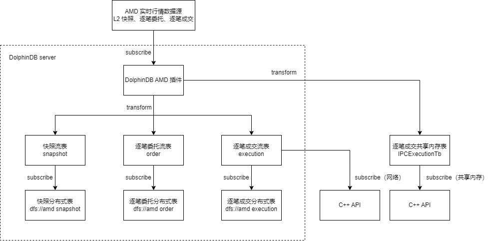

amdQuote 插件最佳实践指南
插件介绍
华锐 AMD 高速行情传输平台是华锐技术推出的行情分发平台，行情消费者可以通过华锐高速行情转码 API (AMA) 对接 AMD，接收转码行情。为了对接该平台，DolphinDB 开发了调用 AMA 的 AMD 插件。目前已经支持的数据源包括：
- 股票快照 snapshot
- 股票逐笔成交 execution
- 股票逐笔委托 order
- 指数 index
- 委托队列 orderQueue
- 基金快照 fundSnapshot
- 基金逐笔成交 fundExecution
- 基金逐笔委托 fundOrder
- 债券快照 bondSnapshot
- 债券逐笔委托 bondOrder
- 债券逐笔成交 bondExecution
注意：
- 最新支持的数据源列表以 amdQuote 插件手册 为准。
- DolphinDB 仅提供对接 AMA 的 AMD 插件，数据源和接入服务需咨询数据服务商或证券公司。
AMD 插件目前支持的 server 版本：
- 稳定版 1.30.X
- 最新版 2.00.X
本教程基于 amdQuote插件 开发，故须要使用 DolphinDB 2.00.10 版本 server。若为其它版本 server，请切换至相应插件分支下载插件包。本教程部署形态为 Linux 单节点，若集群使用，可参考配置到任一数据节点。
安装和加载 AMD 插件
下载和安装
用户可以根据 DolphinDB server 版本下载对应的已经编译好的插件文件，如 DolphinDB 2.00.10 server 对应的 AMD Plugin release200.10 的官方下载链接。
注意到 bin 目录下为 AMA 版本号文件夹，当前支持 3.9.8 和 4.0.1 版本，如果需要其他版本的 AMA 对应的插件，需要自行编译或联系 DolphinDB 技术支持帮助编译。
本教程使用 4.0.1 版本 AMA 为例，下载仓库的 bin/4.0.1 目录下所有文件到 <DolphinDB 安装路径>/plugins/amdquote，如果不存在 amdquote 文件夹需自行创建。
环境变量
下载好插件文件后，需要添加动态库地址到环境变量中。注意插件的安装路径需要根据实际环境修改，本例中插件的安装路径为 /DolphinDB/server/plugins/amdquote，启动 server 前需要执行如下命令：
export LD_LIBRARY_PATH="$LD_LIBRARY_PATH:/DolphinDB/server/plugins/amdquote"注意：可以考虑将该命令添加到 .bashrc 或启动节点的 shell 脚本以自动执行。
加载插件
可以通过两种方法加载插件：
- 配置
preloadModules配置项 - 调用
loadPlugin方法
配置 preloadModules 配置项
添加如下配置项到配置文件 dolphindb.cfg 即可实现节点启动时自动加载 AMD 插件。
preloadModules=plugins::amdquote调用 loadPlugin 方法
在脚本中通过如下方法加载 AMD 插件：
// 加载插件
loadPlugin("/DolphinDB/server/plugins/amdquote/PluginAmdQuote.txt")注意：
- 插件不支持重复加载，重复加载会报错。故如果已经配置 preloadModules，或者已经配置 loadPlugin 到启动脚本，则无需重复调用
loadPlugin。可通过try-catch捕获该重复调用的错误，以避免中断脚本的执行。 - 传入 `loadPlugin`` 方法的插件路径支持安装目录下的相对路径，上述脚本可写为 loadPlugin("plugins/amdquote/PluginAmdQuote.txt")
通过 AMD 插件订阅实时行情
本教程示例脚本中，订阅了上海和深圳市场的快照、逐笔成交、逐笔委托数据到 3 张流数据表中，并对订阅数据做了一些实时转换，然后分别存储到 3 张分布式表里。具体数据与表的对应关系如下：
| 数据源 | 流数据表 | 分布式库表 |
|---|---|---|
| 上海市场股票快照 深圳市场股票快照 上海市场可转债快照 深圳市场可转债快照 上海市场 ETF 基金快照 深圳市场 ETF 基金快照 | snapshot | dfs://amd snapshot |
| 上海市场股票逐笔委托 深圳市场股票逐笔委托 | order | dfs://amd order |
| 上海市场股票逐笔成交 深圳市场股票逐笔成交 | execution | dfs://amd execution |
另外可以通过订阅逐笔数据到跨进程共享内存表（IPC表），然后通过 C++ API 订阅 IPC 表，从而实现低延时接收行情数据到 C++ 程序进行处理。
整个数据流转的过程如下图所示：

注意：AMD 插件不支持订阅一个数据源同时输出到多张表，上图中逐笔成交订阅只能要么输出到流数据表 execution，要么输出到跨进程共享内存表 IPCExecution。本例将统计两种方式数据的全过程穿透时间作性能分析。
建立连接
通过 amdQuote::connect(username, password, ips, ports, options) 方法建立与 AMD 行情服务器的连接，参考脚本如下：
// 加载插件
try{loadPlugin("plugins/amdquote/PluginAmdQuote.txt")} catch(ex){print(ex)}
// 连接行情服务器
option = dict(STRING, ANY)
option[`ReceivedTime] = true
option[`DailyIndex] = true
handle = amdQuote::connect(
"myUsername",
"myPassword",
["110.110.10.10"],
[7890],
option
)其中 option 为可选参数，类型为字典，表示扩展参数。receivedTime 表示是否添加插件收到行情数据时的时间戳的数据列。dailyIndex 表示是否添加每天按 channel_no 分组递增的数据列。
创建流数据表
为简化分布式库表和流数据表的创建脚本，可以在 amdQuote::connect(username, password, ips, ports, options) 方法建立连接后调用 amdQuote::getSchema(type) 方法获取行情数据各个表的表结构，参考脚本如下：
// 获取行情数据的表结构，以 snapshot 为例
snapshotTbName = "snapshot"
snapshotSchema = amdQuote::getSchema(`snapshot)
enableTableShareAndPersistence(table=streamTable(20000000:0, snapshotSchema.name, snapshotSchema.type), tableName=snapshotTbName, cacheSize=20000000)本例教程中，希望对没有日期字段的表的开头增加一个日期字段 tradeDate，在自定义数据处理方法中更新其值为表的时间戳字段的日期部分，故修改上述脚本为：
// 获取行情数据的表结构并建流数据表，以 snapshot 为例
snapshotTbName = "snapshot"
snapshotSchema = amdQuote::getSchema(`snapshot)
colName = append!(["tradeDate"], snapshotSchema.name)
colType = append!(["DATE"], snapshotSchema.type)
enableTableShareAndPersistence(table=streamTable(20000000:0, colName, colType), tableName=snapshotTbName, cacheSize=20000000)创建分布式库表
同理可以使用 amdQuote::getSchema(type) 方法返回的表结构建立分布式库表，参考脚本如下：
// 获取行情数据的表结构并建分布式库表，以 snapshot 为例
snapshotSchema = amdQuote::getSchema(`snapshot)
dbName = "dfs://amd"
snapshotTbName = "snapshot"
if (!existsDatabase(dbName)) {
dbDate = database("", VALUE, 2023.01.01..2023.12.31)
dbCode = database("", HASH, [SYMBOL, 10])
db = database(dbName, COMPO, [dbDate, dbCode], engine="TSDB")
} else {
db = database(dbName)
}
if (!existsTable(dbName, snapshotTbName)) {
colName = append!(["tradeDate"], snapshotSchema.name)
colType = append!(["DATE"], snapshotSchema.type)
tbSchema = table(1:0, colName, colType)
pt = db.createPartitionedTable(table=tbSchema, tableName=snapshotTbName, partitionColumns=`tradeDate`securityCode, sortColumns=`securityCode`origTime, keepDuplicates=ALL)
}AMD 行情数据自定义处理
本例教程中，希望对原始的行情数据做如下处理：
- 增加一个日期字段 tradeDate，其值为对应的时间戳字段的日期部分
- 股票代码字段增加后缀，上海市场的后缀为".SH"，深圳市场的后缀为".SZ"
- 所有价格字段值除以 100
可以通过订阅方法 amdQuote::subscribe(handle, type, streamTable, marketType, codeList, transform) 的 transform 参数实现自定义处理接收到的行情数据。transform 参数要求为一个一元函数，其参数是一个表，为接收到的原始行情数据。根据需求编写自定义处理方法，参考脚本如下：
// 订阅处理方法，以 snapshot 为例
def handleSnapshotSubs(mutable msg, reorderedColNames) {
// 增加一个日期字段 tradeDate，其值为对应的时间戳字段的日期部分
update msg set tradeDate = date(origTime)
// 股票代码字段增加后缀，上海市场的后缀为".SH"，深圳市场的后缀为".SZ"
update msg set securityCode = securityCode + ".SZ" where marketType=102
update msg set securityCode = securityCode + ".SH" where marketType=101
// 所有价格字段值除以 100
update msg set lastPrice = lastPrice / 100
update msg set openPrice = openPrice / 100
update msg set highPrice = highPrice / 100
update msg set lowPrice = lowPrice / 100
update msg set preClosePrice = preClosePrice / 100
update msg set offerPrice1 = offerPrice1 / 100
update msg set offerPrice2 = offerPrice2 / 100
update msg set offerPrice3 = offerPrice3 / 100
update msg set offerPrice4 = offerPrice4 / 100
update msg set offerPrice5 = offerPrice5 / 100
update msg set offerPrice6 = offerPrice6 / 100
update msg set offerPrice7 = offerPrice7 / 100
update msg set offerPrice8 = offerPrice8 / 100
update msg set offerPrice9 = offerPrice9 / 100
update msg set offerPrice10 = offerPrice10 / 100
update msg set bidPrice1 = bidPrice1 / 100
update msg set bidPrice2 = bidPrice2 / 100
update msg set bidPrice3 = bidPrice3 / 100
update msg set bidPrice4 = bidPrice4 / 100
update msg set bidPrice5 = bidPrice5 / 100
update msg set bidPrice6 = bidPrice6 / 100
update msg set bidPrice7 = bidPrice7 / 100
update msg set bidPrice8 = bidPrice8 / 100
update msg set bidPrice9 = bidPrice9 / 100
update msg set bidPrice10 = bidPrice10 / 100
update msg set weightedAvgOfferPrice = weightedAvgOfferPrice / 100
update msg set weightedAvgBidPrice = weightedAvgBidPrice / 100
update msg set highLimited = highLimited / 100
update msg set lowLimited = lowLimited / 100
// 调整列顺序为与流数据表、分布式表一致
reorderColumns!(msg, reorderedColNames)
return msg
}注意到该函数为二元函数，而 transform 参数要求为一元函数，可以通过部分应用来固定一个参数值使其变为一元函数，详见 AMD 订阅一节。
注意：传入的一元函数中不能存在对 DFS 表的操作，例如：读取或写入 DFS 表，获取 DFS 表的 schema 等。故上述脚本的分布式表的字段顺序 reorderedColNames 需要通过参数传入，而不能直接在 transform 处理方法中读取分布式表的字段顺序。
入库订阅
通过 subscribeTable 方法订阅建立的行情数据流数据表入库，参考脚本如下：
// 入库订阅，以 snapshot 为例
pt = loadTable(dbName, snapshotTbName)
subscribeTable(tableName=snapshotTbName, actionName="saveSnapshotToDFS", offset=-2, handler=pt, msgAsTable=true, batchSize=200000, throttle=60)创建完相关订阅后，可以通过执行如下脚本查看已创建的订阅信息：
getStreamingStat().pubTables| tableName | subscriber | msgOffset | actions |
|---|---|---|---|
| snapshot | localhost:8893 | 0 | saveSnapshotToDFS |
AMD 订阅
通过 amdQuote::subscribe(handle, type, streamTable, marketType, codeList, transform) 方法订阅 AMD 实时行情数据到指定流数据表，参考脚本如下：
// AMD 订阅，以 snapshot为例
reorderedColNames = loadTable(dbName, snapshotTbName).schema().colDefs.name
amdQuote::subscribe(handle, `snapshot, snapshot, 101, , handleSnapshotSubs{reorderedColNames=reorderedColNames})
amdQuote::subscribe(handle, `snapshot, snapshot, 102, , handleSnapshotSubs{reorderedColNames=reorderedColNames})对部分重要参数值的解释：
- marketType 参数值 101 表示上海市场，102 表示深圳市场。
- codeList 参数值为空，表示订阅指定市场下所有的代码。
- transform 参数值为 handleSnapshotSubs，使用了“部分应用”来固定 handleSnapshotSubs 方法的 reorderedColNames 参数值，使其变成了一个一元函数，空缺的参数 msg 将由 amdQuote::subscribe 在调用 transform 时填充。
创建完相关订阅后，可以通过执行如下脚本查看已创建的订阅信息：
amdQuote::getStatus(handle)| dataType | marketType |
|---|---|
| snapshot | 101 |
| snapshot | 102 |
可转债和 ETF 基金快照订阅
除了股票的快照行情数据，还希望订阅可转债和 ETF 基金的快照行情数据到 snapshot 流数据表里。但是可转债和 ETF 的代码表每天变化，故需要每天更新订阅的代码表。AMD 插件提供了 amdQuote::getCodeList() 方法获取所有证券的代码表，以及 amdQuote::getETFCodeList() 方法专门获取 ETF 的代码表，故可以通过配置每日定时作业获取新的代码表来重新订阅。对于可转债的代码表，由于其代码有规律可循，可以通过 where 条件对所有证券的代码表进行过滤得到。参考脚本如下：
amdQuote::getCodeList() 的结果包含 amdQuote::getETFCodeList() 的结果。
def subscribeConvertibleBond(handle, reorderedColNames) {
// 通过代码规律过滤得到可转债代码表
codeList = amdQuote::getCodeList()
convertibleBondCodeSh = exec securityCode from codeList where marketType = 101 and (securityCode like "110%" or securityCode like "111%" or securityCode like "113%" or securityCode like "118%" or securityCode like "1320%")
convertibleBondCodeSz = exec securityCode from codeList where marketType = 102 and (securityCode like "123%" or securityCode like "127%" or securityCode like "128%")
amdQuote::subscribe(handle, `bondSnapshot, objByName("snapshot"), 101, convertibleBondCodeSh, handleSnapshotSubs{reorderedColNames=reorderedColNames})
amdQuote::subscribe(handle, `bondSnapshot, objByName("snapshot"), 102, convertibleBondCodeSz, handleSnapshotSubs{reorderedColNames=reorderedColNames})
}
def subscribeEtfFund(handle, reorderedColNames) {
// 获取ETF代码表
codeList = exec securityCode from amdQuote::getETFCodeList()
amdQuote::subscribe(handle, `fundSnapshot, objByName("snapshot"), 101, codeList, handleSnapshotSubs{reorderedColNames=reorderedColNames})
amdQuote::subscribe(handle, `fundSnapshot, objByName("snapshot"), 102, codeList, handleSnapshotSubs{reorderedColNames=reorderedColNames})
}
def subscribeAmdDaily() {
option = dict(STRING, ANY)
option[`ReceivedTime] = true
option[`DailyIndex] = true
handle = amdQuote::connect(
"myUsername",
"myPassword",
["110.110.10.10"],
[7890],
option
)
reorderedColNames = loadTable("dfs://amd", "snapshot").schema().colDefs.name
subscribeConvertibleBond(handle, reorderedColNames)
subscribeEtfFund(handle, reorderedColNames)
}
scheduleJob("subscribeAmdDaily", "subscribeAmdDaily", subscribeAmdDaily, 09:11m, startDate=2022.12.13, endDate=2032.12.13, frequency='D')注意：重复调用 amdQuote::subscribe 会自动取消之前的相同 type 参数的订阅
合并类型行情按 channel 订阅
对于合并类型行情 "bondExecution"，"orderExecution"，"fundOrderExecution"，支持按 channel 订阅各个 channel 的数据到各自的流数据表，从而可以对不同 channel 的数据分别做相应的处理；也可以订阅指定 channel 的数据到同一张流数据表。以订阅 "orderExecution" 行情为例，分别订阅 channel 1 和 2 的数据到流数据表 orderExecution1 和 orderExecution2，参考订阅脚本如下：
// 以 orderExecution 为例
executionSchema = amdQuote::getSchema(`orderExecution)
enableTableShareAndPersistence(table=streamTable(20000000:0, executionSchema.name, executionSchema.type), tableName=`orderExecution1, cacheSize=20000000)
enableTableShareAndPersistence(table=streamTable(20000000:0, executionSchema.name, executionSchema.type), tableName=`orderExecution2, cacheSize=20000000)
d = dict(INT, ANY)
d[1] = orderExecution1
d[2] = orderExecution2
amdQuote::subscribe(handle, `orderExecution, d, 101)订阅到 IPC 表
amdQuote::subscribe(handle, type, streamTable, marketType, codeList, transform) 方法的 streamTable 参数支持跨进程共享内存表（IPC 表），可以直接将行情数据写入到 IPC 表中，相关脚本如下：
// 订阅到跨进程共享内存表
dbName = "dfs://amd"
executionTbName = "execution"
tbName = "IPCExecutionTb"
executionSchema = amdQuote::getSchema(`execution)
colName = append!(["tradeDate"], executionSchema.name)
colType = append!(["DATE"], executionSchema.type)
tmpColDefs = table(1:0, colName, colType).schema().colDefs
if (!existsTable(dbName, executionTbName)) {
colName = append!(["tradeDate"], executionSchema.name)
colType = append!(["DATE"], executionSchema.type)
tbSchema = table(1:0, colName, colType)
pt = db.createPartitionedTable(table=tbSchema, tableName=executionTbName, partitionColumns=`tradeDate`securityCode, sortColumns=`securityCode`execTime, keepDuplicates=ALL)
}
try { dropIPCInMemoryTable(tbName) } catch(ex) { print(ex) }
IPCExecutionTb = createIPCInMemoryTable(1000000, tbName, tmpColDefs.name, tmpColDefs.typeInt)
def handleExecutionSubs(mutable msg, reorderedColNames) {
// 增加一个日期字段 tradeDate，其值为对应的时间戳字段的日期部分
update msg set tradeDate = date(execTime)
update msg set securityCode = securityCode + ".SZ" where marketType = 102
update msg set securityCode = securityCode + ".SH" where marketType = 101
// 所有价格字段值除以 100
update msg set execPrice = execPrice / 100
// 调整列顺序为与流数据表、分布式表一致
reorderColumns!(msg, reorderedColNames)
return msg
}
reorderedColNames = loadTable(dbName, executionTbName).schema().colDefs.name
amdQuote::subscribe(handle, `execution, IPCExecutionTb, 101, , handleExecutionSubs{reorderedColNames=reorderedColNames})
amdQuote::subscribe(handle, `execution, IPCExecutionTb, 102, , handleExecutionSubs{reorderedColNames=reorderedColNames})可以通过 C++ API 订阅 IPC 表，从而实现低延时接收行情数据到 C++ 程序进行处理。相较于通过网络传输订阅，通过 IPC 表订阅的方式时延更低，但要求发布端和接收端在同一物理机上。参考核心 C++ 代码如下：
IPCInMemoryStreamClient memTableClient;
// 创建一个存储数据的 table，要求和 createIPCInMemoryTable 中列的类型和名称一一对应
vector<string> colNames = {"marketType", "securityCode", "execTime", "channelNo", "applSeqNum", "execPrice", "execVolume", "valueTrade", "bidAppSeqNum", "offerApplSeqNum", "side", "execType", "mdStreamId", "bizIndex", "varietyCategory", "receivedTime", "dailyIndex", "perPenetrationTime"};
vector<DATA_TYPE> colTypes = {DT_INT, DT_SYMBOL, DT_TIMESTAMP, DT_INT, DT_LONG, DT_LONG, DT_LONG, DT_LONG, DT_LONG, DT_LONG, DT_CHAR, DT_CHAR, DT_STRING, DT_LONG, DT_CHAR, DT_NANOTIMESTAMP, DT_INT, DT_NANOTIME};
int rowNum = 0, indexCapacity=10000;
// 创建一个和共享内存表结构相同的表
TableSP outputTable = Util::createTable(colNames, colTypes, rowNum, indexCapacity);
// 是否覆盖前面旧的数据
bool overwrite = true;
ThreadSP thread = memTableClient.subscribe(tableName, dumpData, outputTable, overwrite);
thread->join();完整参考代码见附件 main.cpp。
节点启动时自动订阅 AMD 实时行情数据入库
可以通过配置用户启动脚本 startup.dos 实现节点启动时自动订阅 AMD 实时行情数据入库。单节点模式下配置在 dolphindb.cfg，集群模式下配置在 cluster.cfg。参考配置如下：
startup=/DolphinDB/server/startup.dos在配置的 startup.dos 文件内配置订阅 AMD 相关业务脚本，即可实现节点启动时自动订阅 AMD 实时行情数据入库，参考脚本见附件 startup.dos（包含建库表）。
性能
系统配置
- CPU 类型：Intel(R) Core(TM) i7-10700 CPU @ 2.90GHz
测试方法
amdQuote::connect 方法的 option 参数支持配置 "OutputElapsed" 项，配置为 true 时行情数据将包含插件接收数据的时延列 perPenetrationTime。可以通过该列来统计 AMD 插件接收数据的性能，在相同时间区间内，取该列值的均值得到平均时延。
注意：时延的定义：若配置了 transform 参数，则为 AMD 回调函数返回数据到开始 transform 处理前这段时间；否则为 AMD 回调函数返回数据到 append 到共享流数据表前这段时间。即网络时延和用户自定义 transform 方法耗时没有包含在内。
另外对于 IPC 表，将统计从收到行情数据到 C++ API 收到数据的全过程穿透时间，可以通过统计 C++ 端时间戳 - recivedTime 字段的平均值得到平均穿透时间，并和共享流数据表 + 网络连接订阅的方式做性能对比。
本教程通过模拟的回放数据来测试性能，数据量级说明如下表：
| 数据源 | 平均速率（条/s） |
|---|---|
| snapshot | 5000 |
| execution | 50000 |
| order | 50000 |
| orderExecution | 50000 |
测试结果
流数据表的平均时延如下表：
| 流数据表名 | 平均时延(μs) |
|---|---|
| snapshot | 175 |
| execution | 475 |
| order | 320 |
| orderExecution1 | 253 |
| orderExecution2 | 263 |
通过IPC表订阅和通过网络订阅的平均穿透时间如下表：
| API 订阅方式 | 平均穿透时间(μs) |
|---|---|
| IPC 表订阅 | 681 |
| 网络订阅 | 19866 |
可见AMD插件接收数据的平均时延与通过IPC表订阅的平均穿透时间在百微秒级别，性能非常优秀，且通过 IPC 表订阅比通过网络传输订阅时延明显更低。